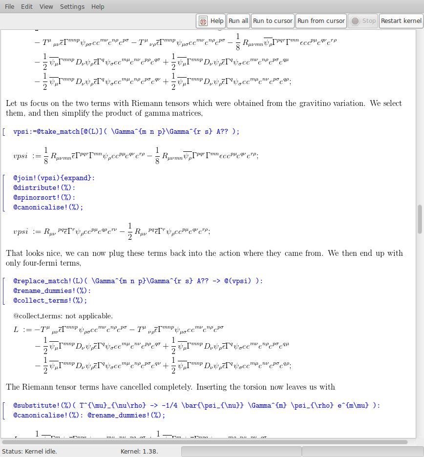

Your input needed!
I am working on Cadabra version 2, and need your input! Please take a minute to fill out the Cadabra survey. Thanks!
See the results so far.
For any other feedback, please email cadabra@phi-sci.com.
Collaboration with Software Sustainability Institute
I am pleased to announce that the development of Cadabra has just received a great boost with the start of a collaboration with the Software Sustainability Institute. This will lead to a better maintainability of the software on multiple platforms (in particular OS X) and will speed up the release of the upcoming version 2.
What is Cadabra?
 what's new? (1.41 released, Nov 3rd 2015)
what's new? (1.41 released, Nov 3rd 2015)
 Cadabra is a computer algebra system (CAS) designed specifically for the solution of problems encountered in field theory. It has extensive functionality for tensor computer algebra, tensor polynomial simplification including multi-term symmetries, fermions and anti-commuting variables, Clifford algebras and Fierz transformations, implicit coordinate dependence, multiple index types and many more. The input format is a subset of TeX. Both a command-line and a graphical interface are available.
Key features of Cadabra:
- Input and output using TeX notation.
- Designed for field-theory problems, with handling of anti-commuting and non-commuting objects without special notations for their products, gamma matrix algebra, Fierz identities, Dirac conjugation, vielbeine, flat and curved, covariant and contravariant indices, implicit dependence of tensors on coordinates, partial and covariant derivatives...
- Powerful tensor simplification algorithms, not just for mono-term symmetries but also for multi-terms symmetries like the Bianchi identity, or dimensionally-dependent symmetries like the Schouten identity.
Technical highlights:
- Internal graph data structure based on tree.hh
- A multiple-inheritance typing system using properties.
- Open source C++ code, with documentation on how to extend the system with new algorithm modules.
All feedback is welcome (bugs reports, criticism, suggestions); please contact cadabra@phi-sci.com or post to the mailing list.
License
If you use Cadabra or even just play with it, I would like to hear about it. Please send me an email so that I can get an idea of who is interested in this program. And remember:
The "rule of 3": It takes 1 unit of work to get something for yourself. It takes 3x1 units of work to make it so your office neighbor can use it. It takes 3x3x1 units of work so you can use it "in the department" and in courses. It takes 3x3x3x1 units of work to give it to the world for free without support.
So if you use Cadabra in your own work, please cite the papers "Introducing Cadabra: a symbolic computer algebra system for field-theory problems" and "A field-theory motivated approach to symbolic computer algebra" (see documentation for publication details) to keep the bean counters happy.
Cadabra is available under the conditions of the GNU General Public License (version 2).
Acknowledgements
Cadabra contains code taken from José Martin-Garcia's xPerm in order to canonicalise tensor expressions. Some of the algorithms rely on the LiE software by Marc van Leeuwen, Arjeh Cohen and Bert Lisser. Thanks to James Allen for various patches to improve functionality.
Thanks to Greg Wright for helping to get Cadabra run on Mac OS X and for making it available through MacPorts.
Thanks to Kevin Horton, Martin Costabel and Pierre-Henri Lavigne for making Cadabra available for Mac OS X through Fink, and thanks to Mukund Rangamani for testing it.
Thanks to Bernard Piette for providing me with access to a Fedora machine in order to build the RPM packages.
Thanks to Jeremy Michelson, Christian Stahn, Pierre Vanhove, Anders Westerberg, Boris Pioline, Clement Rousset, Robert McNees, Marcus Berg, Miguel Paulos, Karim Malik, Mike Mowbray, Leo Brewin and Mathieu Ehrhardt for comments, suggestions, bug reports and other useful feedback.
Finally, thanks go to the Albert-Einstein-Institute for the excellent working atmosphere which enabled me to write Cadabra.